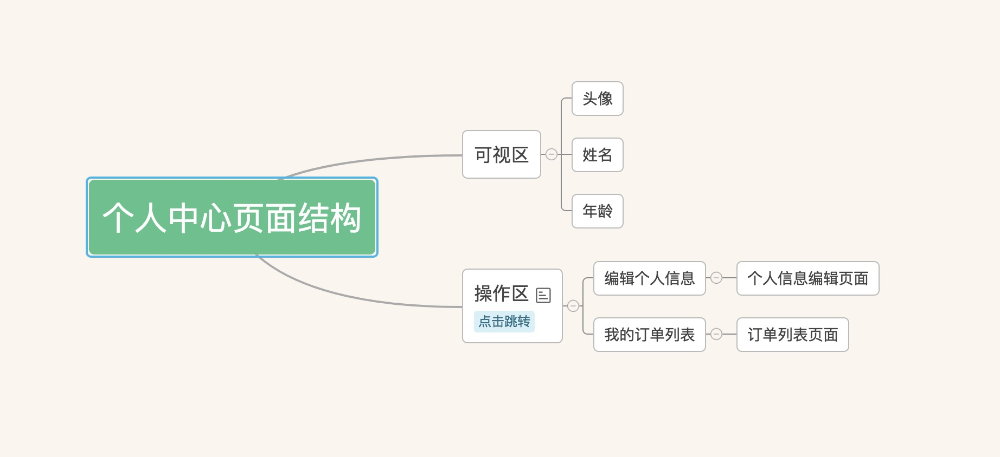

<link rel="import" href="../../bower_components/polymer/polymer-element.html">
<link rel="import" href="my-toolbar.html">
<link rel="import" href="default-theme.html">

<dom-module id="task-index">
  <template>
    <style include="shared-styles">
      :host {
        /*--my-toolbar-title-color: green;*/
        --my-toolbar-theme: {
          background-color: green;
          border-radius: 4px;
          border: 1px solid gray;
        };
        --my-toolbar-content-theme: {
          color: red;
        };
      }
      /* Make only toolbars with the .warning class red */
      .warning {
        --my-toolbar-title-color: red;
        --my-toolbar-theme: {
          background-color: pink;
          border-radius: 10px;
          border: 2px solid gray;
        };
        --my-toolbar-content-theme: {
          color: black;
        };
      }
      .success {
        --my-toolbar-title-color: pink;
        --my-toolbar-theme: {
          background-color: orange;
          border-radius: 4px;
          border: 2px solid gray;
        };
        --my-toolbar-content-theme: {
          color: var(--yellow);
        };
        text-align: right;
      }
      my-toolbar.success{
        background: rebeccapurple;
      }
      .content{
        background-ccolor: orange;
        border-radius: 4px;
        border: 2px solid gray;

      }
    </style>

    <!--<div class="card">-->
      <!--<h1> 练习介绍页 </h1>    <a class="btn">Btn</a>-->
      <!--<h5>1. 实现一个简单的个人中心功能</h5>-->
      <!--<p> > a. 主要包含三个页面 个人中心, 个人信息编辑, 订单列表 (列表请使用 paper-item 实现内容不限)</p>-->
      <!--<h5>2. 具体页面结构如下图(布局不作特别要求)</h5>-->
      <!---->
      <!--<h5>3. 任务目的</h5>-->
      <!--<p> > a. 熟悉 polymer 的组件的基本组成和生命周期</p>-->
      <!--<p> > b. 熟悉 polymer 的数据绑定机制(包括父组件和子组件之间的参数传递)</p>-->
      <!--<p> > c. 了解 polymer 的事件传播机制</p>-->
      <!--<p> > d. 了解 polymer 的路由机制(app-route)</p>-->
      <!--<h5>4. 参考文档</h5>-->
      <!--<a href="https://polymer-zh.cn/2.0/start/"> Polymer 2.0 文档主页 </a> <br>-->
      <!--<a href="https://github.com/Polymer/polymer"> Polymer 项目 Git 地址 </a> <br>-->
      <!--<a href="https://github.com/PolymerElements"> Polymer-Element Git 地址</a> <br>-->
      <!--<a href="https://polymer-zh.cn/2.0/start/toolbox/set-up"> Polymer CLI 学习和项目启动方式 </a>-->
    <!--</div>-->
    <my-toolbar title-name="This one is green."></my-toolbar>
    <my-toolbar title-name="This one is green too."></my-toolbar>
    <my-toolbar class="warning" title-name="This one is red."></my-toolbar>
    <my-toolbar class="success" title-name="This one is pink."></my-toolbar>
    <a class="btn-primary">Btn</a>
  </template>

  <script>
    class TaskIndex extends Polymer.Element {
      static get is() { return 'task-index'; }
    }

    window.customElements.define(TaskIndex.is, TaskIndex);
  </script>
</dom-module>
